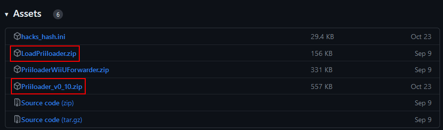
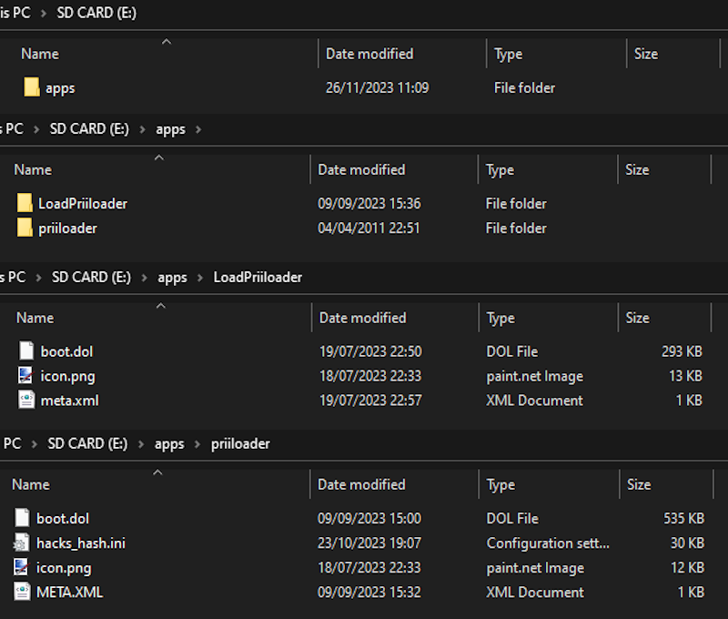
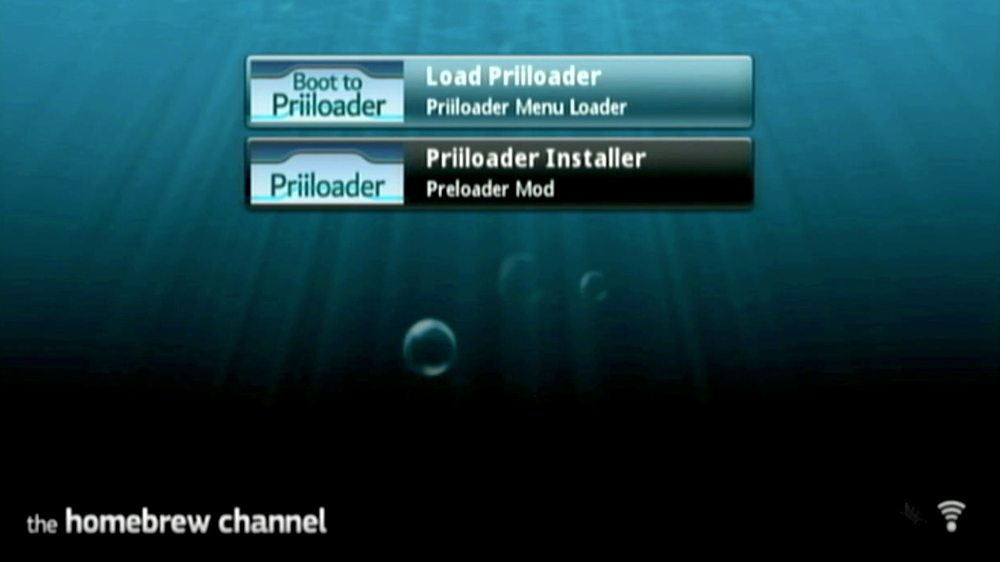
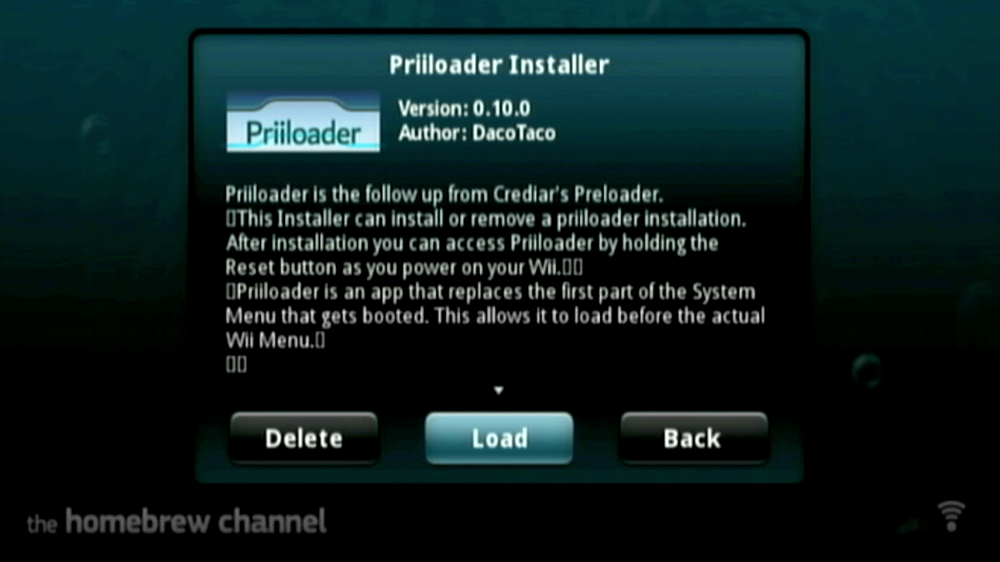
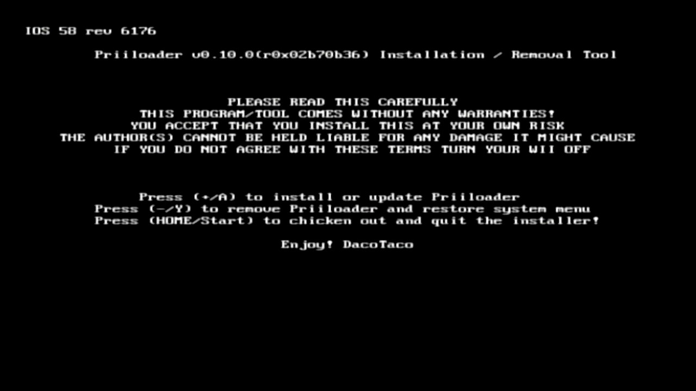
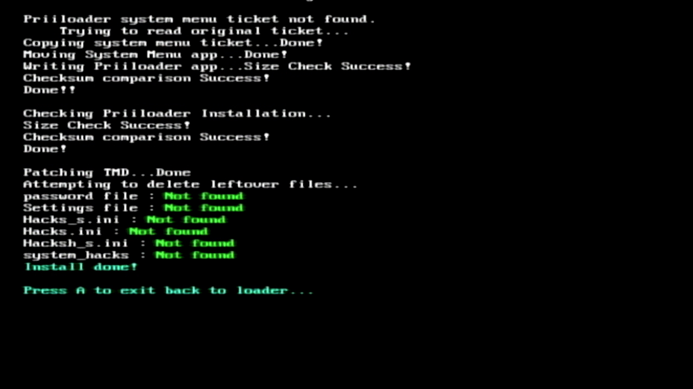
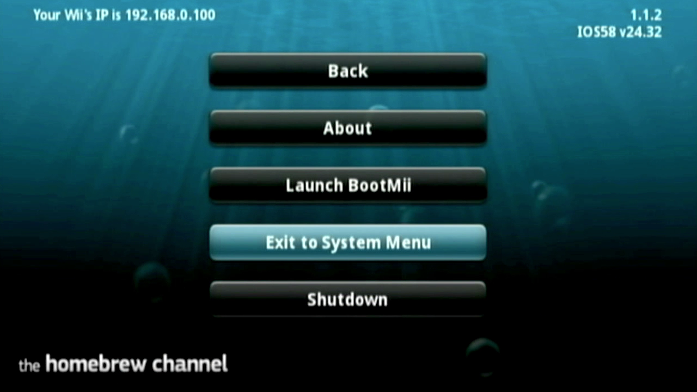
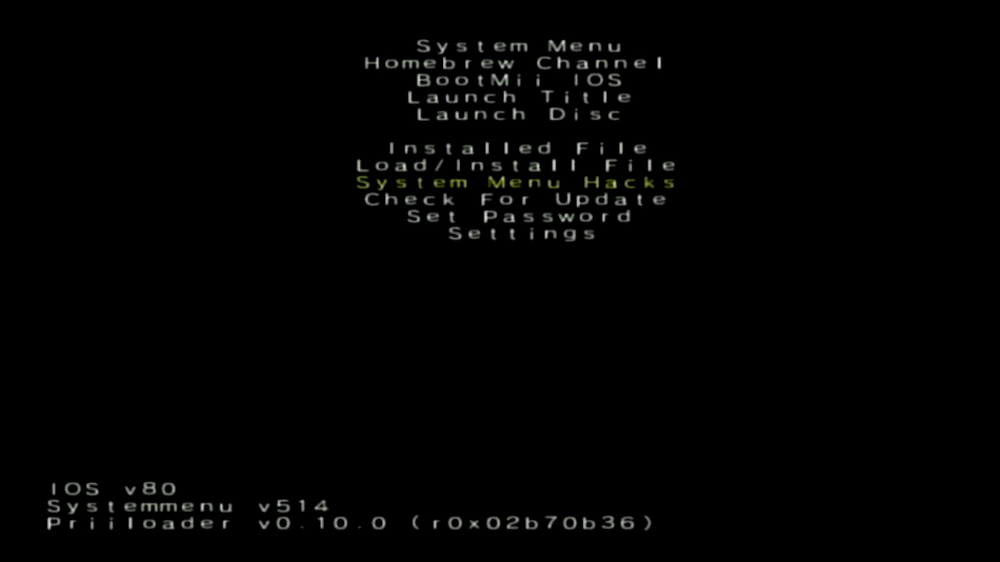

Priiloader
Priiloader is a homebrew app for the Wii which provides protection against some bricks.
For this guide, you will need:
• A Wii with the homebrew channel
• An SD card formatted to FAT32
1. Download "Priiloader_v0_10.zip" and "LoadPriiloader.zip" from here
2. Use 7zip or any other extraction software to extract "Priiloader_v0_10.zip" and "LoadPriiloader.zip" to the root of your SD card. The files should look like this.
3. Insert the SD card into the Wii and power on the console.
4. Open the homebrew channel. You should now see "Priiloader Installer" and "Load Priiloader".
5. Load "Priiloader Installer". You should now see this screen.
 6. Press the + or A buttons on your Wii remote to continue to the Priiloader installation.
7. Press A to return back to the homebrew channel. Priiloader is now sucessfully installed.
8. Press the home button on your Wii remote and select "Exit to System Menu".
9. You should now be in Priiloader. Scroll down to "System Menu Hacks" and press A.
10. Enable these options:
• Block Online Updates
• Block Disc Updates
• Remove Deflicker (Only use this if you are not using a CRT)
11. Scroll down to "Save Settings" and press A.
12. Press B to return to the main menu. Then, select "System Menu" to return to the Wii menu.
Congratulations! Your Wii is now fully modded.
If you would like to get the full potential out of your Wii, please continue to our optional cIOS guide.
Installing cIOS